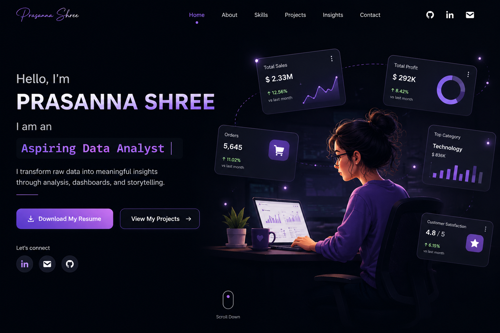

Data Analysis
Clean and organize data, perform quality checks, identify trends, calculate KPIs, and analyze business performance.
DATA ANALYTICS PORTFOLIO
Hello, I'm
I am an
I transform raw data into meaningful insights through analysis, dashboards, and clear business storytelling.

01 — ABOUT ME
I am an aspiring Data Analyst and BCA graduate with hands-on experience in data cleaning, exploratory analysis, SQL querying, dashboard development, and business reporting.
I enjoy working across the full analytics workflow — starting with raw data, performing data quality checks and cleaning, exploring trends, developing KPIs, and finally presenting findings through dashboards and clear recommendations.
I work with Excel, SQL, Python, Power BI, Tableau, and GitHub. Through my projects, I have analyzed sales, profitability, customer segments, products, regions, discounts, and operational metrics to support business-focused decision-making.
02 — WHAT I CAN DO
Clean and organize data, perform quality checks, identify trends, calculate KPIs, and analyze business performance.
Use joins, aggregations, subqueries, CTEs, window functions, and data-quality checks to analyze business data.
Use Pivot Tables, formulas, KPI calculations, charts, and dashboards to explore and communicate performance.
Build structured analysis workflows for data cleaning, KPI calculations, and business-focused exploration.
Build interactive dashboards with KPIs, trends, slicers, product analysis, and regional performance views.
Translate analysis into recommendations by identifying growth opportunities, performance gaps, and areas for review.
03 — FEATURED PROJECT
An end-to-end sales and profitability analysis covering data quality, SQL analysis, Python workflows, and dashboards in Excel, Power BI, and Tableau.
Focus on high-performing Technology products, review pricing, discounts, and costs for loss-making sub-categories, maintain strong performance in the West region, and monitor profitability alongside sales growth.
04 — MORE WORK
I am continuing to build hands-on projects to strengthen my skills in data analysis, visualization, business intelligence, and decision support.
05 — CONTACT
Interested in connecting or discussing data analytics opportunities? Feel free to reach out.